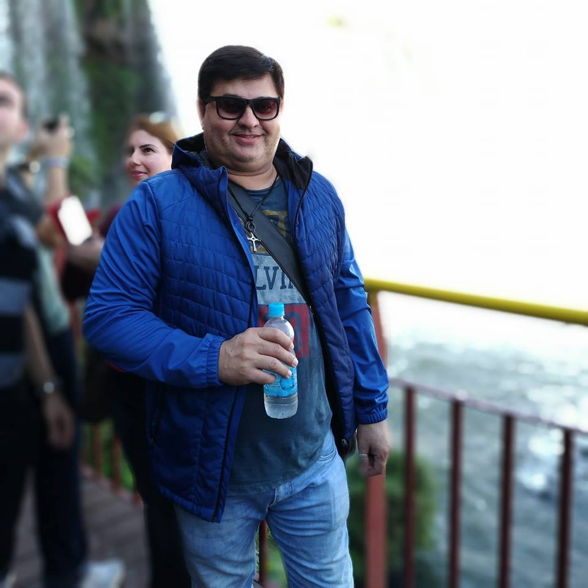

Prof. Carlos
Possui graduação em Letras, mestre em Letras, área de concentração Estudos Lingüísticos, da Universidade Federal de Mato Grosso do Sul - Campus de Três Lagoas, nível Mestrado, Atualmente é Professor Universitário do CEETEPS - FATEC - nas modalidades de Ensino Presencial e Ensino à Distância EaD. Professor de Língua Inglesa I, III e V na Fundação Educacional de Fernandópolis - FEF. Tem experiência na área de Letras, com ênfase no ensino de Língua Inglesa, Lingua Inglesa: Prática Oral, Inglês Instrumental e Linguística. No ano de 2009 trabalhou com tutor on line Casa Thomas Jefferson. É fluente na Língua Inglesa. (Texto informado pelo autor).
Conceito
Introdução à compreensão e produção oral e escrita por meio da integração das habilidades linguístico-comunicativas. Ênfase na oralidade, atendendo às especificidades acadêmico-profissionais da área e abordando aspectos socioculturais da língua inglesa.
Objetivo
Apresentar os recursos da Língua inglesa objetivando desenvolver as quatro habilidades, reading, listening, writing e speaking. Apoiar as atividades de construção de blogs e sítios Internet previstas para o semestre. Os estudantes deverão ser capazes de: apresentar-se, dar informações pessoais e profissionais; entender números em contextos diversos; fazer perguntas simples e responder sobre vida cotidiana e comunicação empresarial, tais como escrita de e-mails e atender uma ligação telefônica; extrair informações de textos técnicos específicos da área; entender diferenças básicas de pronúncia.